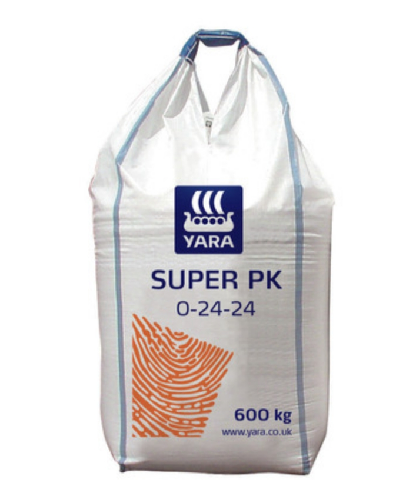

Nutrient Composition
P2O5 : 24%
K2O: 24%
SO34: 8%
Descreption
* SUPER PK (0-24-24 + 4.8% SO3) is a granular compound for building P and K and
where straw is removed or for use in a situations where the use of nitrogen is limited
by nitrate vulnerable zone rulings.
Ideal for use when potash levels are high.
Rs.300